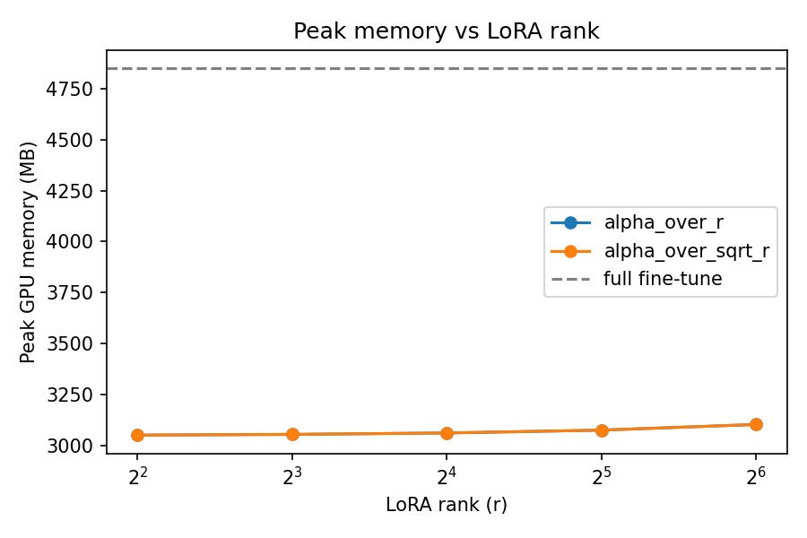

LoRA From Scratch: Biomedical Text Classification
A from-scratch PyTorch implementation of LoRA (Low-Rank Adaptation), fine-tuning RoBERTa-base on PubMed-RCT sentence classification and benchmarked directly against full fine-tuning — across five ranks and two adapter-scaling conventions — to understand the accuracy/efficiency trade-off of parameter-efficient fine-tuning.
Task & Data
PubMed-RCT is a sentence-level classification task over biomedical abstracts: label each sentence of a randomized controlled trial abstract as BACKGROUND, OBJECTIVE, METHODS, RESULTS, or CONCLUSIONS — a real structuring task for otherwise unstructured medical literature. The split used was 177K training sentences, 29.7K validation, and 29.6K test.
The base model is roberta-base (125M parameters), fine-tuned two ways: full fine-tuning, where every parameter is trainable (the baseline), and LoRA, where the base model is frozen and small low-rank adapter matrices (lora_A, lora_B) are injected into the query/value attention projections of every transformer layer.
Architecture & Implementation
Both the adapter and its injection into a real Hugging Face model were written from scratch rather than using an existing PEFT library, specifically to work through the mechanics directly. LoRALinear wraps a frozen nn.Linear and adds a trainable low-rank correction:
# output = base_linear(x) + scaling * (x @ A @ B) class LoRALinear(nn.Module): def __init__(self, base_linear, r=8, alpha=16, dropout=0.0, scaling_mode="alpha_over_r"): self.base = base_linear self.base.weight.requires_grad = False # freeze the base weight self.lora_A = nn.Parameter(torch.zeros(in_features, r)) self.lora_B = nn.Parameter(torch.zeros(r, out_features)) nn.init.kaiming_uniform_(self.lora_A, a=math.sqrt(5)) # A: Kaiming init nn.init.zeros_(self.lora_B) # B: zero init self.scaling = alpha / r # or alpha / sqrt(r) def forward(self, x): base_out = self.base(x) lora_out = self.dropout(x) @ self.lora_A @ self.lora_B return base_out + self.scaling * lora_out def merge(self): # fold the adapter back into the base weight delta = self.scaling * (self.lora_A @ self.lora_B) # (in, out) self.base.weight += delta.T # nn.Linear.weight is (out, in) return self.base
Asymmetric initialization
lora_A is Kaiming-initialized and lora_B is zero-initialized, matching the original LoRA paper. Zero-initializing both matrices instead would give zero gradient for both at the start of training — the adapter would never move.
Query/value-only injection
inject_lora walks the model recursively and replaces only the nn.Linear submodules named query or value with LoRALinear, matching the original paper's finding that adapting just those two projections captures most of LoRA's benefit at a fraction of the trainable-parameter cost of adapting every linear layer.
The merge-transpose fix
The low-rank delta is naturally shaped (in_features, out_features) from lora_A @ lora_B, but PyTorch's nn.Linear.weight is stored (out_features, in_features). Merging without transposing the delta silently adds a mismatched-orientation correction to the weight matrix — wrong values, no shape error, since both matrices can be square-ish enough to broadcast. delta.T before the in-place add is what makes merge() actually fold the adapter in correctly.
Two scaling conventions
The adapter's output is scaled by alpha / r (the original LoRA paper's convention) or alpha / √r (proposed by follow-up "rank-stabilized LoRA" work as a way to hold the adapter's output magnitude more constant as rank changes). Both are implemented and swept across every rank in the ablation below.
The Ablation
LoRA rank r ∈ {4, 8, 16, 32, 64} was swept against both scaling conventions, with alpha = 2r chosen so that alpha/r stays a constant scaling factor of 2 at every rank — which makes the alpha/√r comparison an apples-to-apples test of what changes when scaling is allowed to grow with rank instead.
Results
| Method | Rank | Alpha mode | Accuracy | Macro F1 | Wall-clock (s) | Peak mem (MB) | Checkpoint (MB) | Trainable % |
|---|---|---|---|---|---|---|---|---|
| Full fine-tune | N/A | N/A | 87.37% | 0.8140 | 3416.7 | 4847.6 | 475.5 | 100% |
| LoRA | 4 | alpha/r | 84.10% | 0.7764 | 289.7 | 3052.6 | 2.85 | 0.594% |
| LoRA | 4 | alpha/√r | 83.17% | 0.7672 | 293.9 | 3052.6 | 2.85 | 0.594% |
| LoRA | 8 | alpha/r (best) | 84.53% | 0.7829 | 293.4 | 3056.1 | 3.41 | 0.712% |
| LoRA | 8 | alpha/√r | 80.13% | 0.7257 | 293.1 | 3056.1 | 3.41 | 0.712% |
| LoRA | 16 | alpha/r | 84.41% | 0.7812 | 293.8 | 3063.0 | 4.54 | 0.946% |
| LoRA | 16 | alpha/√r | 33.42% | 0.1002 | 292.5 | 3063.0 | 4.54 | 0.946% |
| LoRA | 32 | alpha/r | 84.05% | 0.7755 | 294.6 | 3076.9 | 6.79 | 1.410% |
| LoRA | 32 | alpha/√r | 33.42% | 0.1002 | 292.8 | 3076.9 | 6.79 | 1.410% |
| LoRA | 64 | alpha/r (worst) | 82.09% | 0.7521 | 295.8 | 3104.7 | 11.29 | 2.326% |
| LoRA | 64 | alpha/√r | 33.42% | 0.1002 | 294.6 | 3104.7 | 11.29 | 2.326% |
The full fine-tune baseline trained on the complete 177K-row training set for 3 epochs; the LoRA runs trained on a 25K-row subsample for 1–2 epochs, for practicality on a single Colab T4 session. Wall-clock and memory figures are each internally comparable within their own row group, but the accuracy gap between LoRA and full fine-tuning is likely somewhat narrower than shown here, since LoRA saw substantially less data.

Why alpha/√r Collapses
With alpha = 2r, the alpha/r scaling factor is a constant 2 at every rank. Under alpha/√r, that's no longer true: the effective scaling grows with rank, from 4.0 at r=4 up to 16.0 at r=64. Combined with LoRA's learning rate, that growing scaling factor amplifies gradients enough to destabilize training — and somewhere between r=8 and r=16, every higher-rank alpha/√r run collapsed to predicting a single constant class. The three collapsed runs (r=16, 32, 64) match each other's accuracy and macro-F1 to six decimal places, which is a strong signal that this is a deterministic failure mode of the scaling, not noise from three independently trained models landing in the same place by chance.
alpha/√r runs would be the natural next test — the README flags this as the logical follow-up.Conclusions
LoRA recovers most of full fine-tuning's accuracy at a small fraction of the cost. With standard alpha/r scaling, every rank tested landed 3–5 points behind the full fine-tune's 87.37% accuracy (82.09–84.53% across the five ranks), while training only 0.59–2.33% of the model's parameters. The practical payoff is real: a 2.8–11.3 MB adapter versus a 475.5 MB full checkpoint (40–170x smaller), and roughly 35% less peak GPU memory — a real accuracy-for-memory trade-off.
A higher rank didn't mean better accuracy. Among alpha/r runs, r=8 was the best configuration (84.53%), narrowly ahead of r=4 and r=16, with r=64 trailing at 82.09% — the worst of the five. More trainable parameters didn't translate to more accuracy here; it likely just gave the adapter more capacity to overfit a 25K-row subsample in one epoch. Confirming that would need testing with more data and more epochs.
Overall, this was more exploratory playing-around with LoRA and PEFT under constrained compute than a push for a state-of-the-art number — but it surfaced a real, reproducible failure mode in a scaling convention that follow-up literature proposed as an improvement, and it cemented just how favorable the accuracy/efficiency trade-off of LoRA can be when fine-tuning needs to scale up.
Project Structure
| File | Purpose |
|---|---|
lora_layers.py | LoRALinear (the adapter itself) + inject_lora (recursively wires it into a real model) |
data.py | Loads and tokenizes PubMed-RCT into a PyTorch DataLoader |
model.py | Builds the full fine-tune model and the LoRA-injected model |
metrics.py | Trainable param count, GPU memory, wall-clock time, checkpoint size, accuracy/macro-F1 |
train.py | One training loop shared by both experiment types |
run_experiments.py | Orchestrates the baseline run and the rank/scaling sweep, writes results.csv |
plots.py | Generates the accuracy-vs-rank and memory-vs-rank charts above |
run_project.ipynb | Runs the whole project end-to-end in Colab (T4 GPU recommended) |